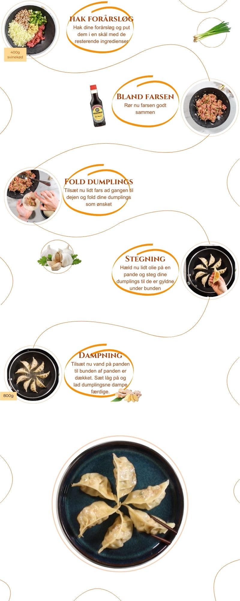
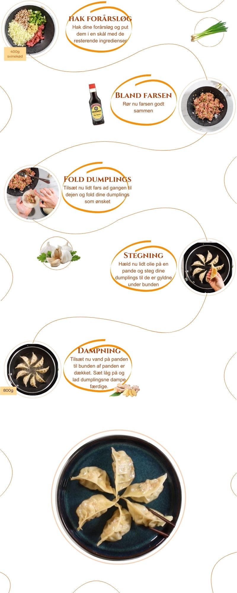

Dumplings med svinekød
Ingredienser
Fremgangsmåde
1. 400g. svinekød
2. 4 forårsløg
3. 3 fede hvidløg
4. 1 spsk. ingefærpaste
5. 2 spsk. soyasovs
6. 1 lille spsk. sambal olek
7. Salt og peber
8. Dumplings skin
9. Olie til stegning
10. Vand til dampning
Start med at snitte forårsløgene og put dem i en skål. Tilsæt derefter de restrende ingridienser (Udover dumplings skin, olie og vand) og rør farsen godt igennem.
Nu skal dumplingsne foldes. Der er mange måder at gøre det på og husk på at øvelse gør mester. Jeg plejer at tage en teske med farsen og placere den midt på dumplings skinnet.
Derefter dypper jeg min finger i vand og gør halvdelen af cirklens periferi fugig. Vanden fungerer som en slags lim.
Nu folder jeg midten sammen og folder dejen i små læg mens jeg klemmer siderne sammen. Her ville jeg råde jer til at google en video og undersøge hvilken metoder der passer dig bedst. Fortsæt til hele farsen er opbrugt.
Find nu din største pande frem, som du også har et låg til, og varm panden op. Tilsæt en lille smule olie på panden og placér dine dumplings jævnt på panden.
Steg nu dumplingsne til de er gyldne på undersiden. Sku nu ned for varmen og hæld ca. en 1/2 dl. vand i panden, så bunden på alle dumplings er dækket. Sæt nu låg på panden og lad dumplingsne dampe færdige -Det tager ca. 5 minutter, og man kan se på dumplingsskinnet om det er gennembagt.
Voliá! Nyd nu dine lækre dumplings, dyp dem evt. i lidt soya eller anden lækker sovs efter eget valg.